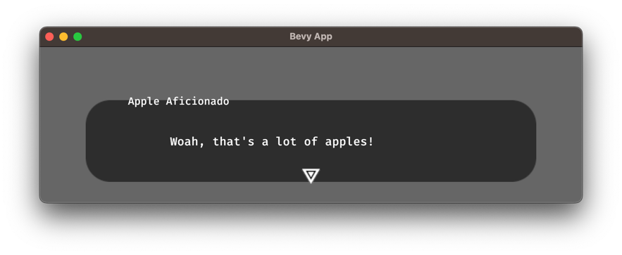
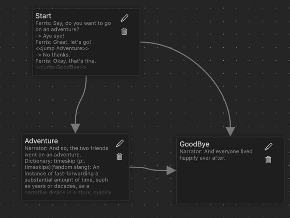
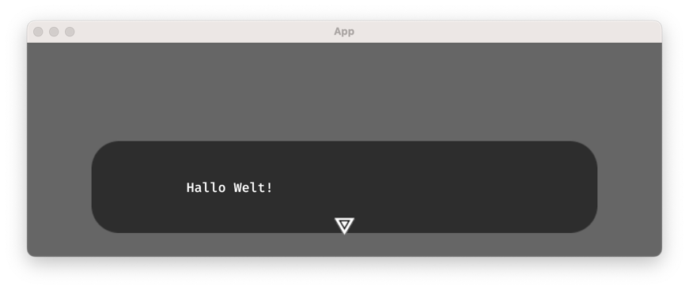

Yarn Spinner for Rust Book
Welcome to Yarn Spinner for Rust, the friendly dialogue tool for Rust! Yarn Spinner for Rust is a port of the widely used dialogue tool Yarn Spinner.
Please click on the link that describes your situation the best.
Yarn Files
Yarn Spinner for Rust is a port of the widely used dialogue tool Yarn Spinner. They both share the idea of writing dialog in writer-friendly text files called Yarn files.
This chapter greatly overlaps with the following Yarn Spinner documentation chapters, so feel free to check these out as well:
Basics
Yarn Spinner stores its dialogue in Yarn files. These look a bit like play scripts or movie scripts.
Here is an example that might be called hello_world.yarn:
title: Start
---
Hello World!
===
Simple, right? Let's go through it line-by-line.
- Yarn files are organized in nodes. The first line in this script,
title: Start, tells us that this is the start of the node namedStart. We call this kind of information aheader. - The line
---separates the headers from the body. Hello Worldis the text that will be shown to the player.===marks the end of the node.
And that's the whole file! If you run this node, you will get a dialogue box with the text "Hello World!".
In the next chapter, we will look at how you can run examples along.
Running Examples
You can run Yarn files by copy-pasting them into Try Yarn Spinner. This is nice because it runs directly in your browser and so doesn't require any setup. Since Yarn Spinner and Yarn Spinner read Yarn files the same way, the behavior will be identical to how it would be in your game. The only thing to look out for is that Try Yarn Spinner will only start at a node named "Start".
If you want to see the result of your Yarn files in an actual game window, you can setup a little example project. We will use screenshots from such a setup throughout the book.
If you want to follow along this way setup the crate by running the following commands.
cargo new yarnspinner_playground
cd yarnspinner_playground
cargo add bevy --features filesystem_watcher
cargo add bevy_yarnspinner bevy_yarnspinner_example_dialogue_view
Then, in your src/main.rs, add the following code:
// src/main.rs use bevy::{prelude::*, asset::ChangeWatcher, utils::Duration}; use bevy_yarnspinner::prelude::*; use bevy_yarnspinner_example_dialogue_view::prelude::*; fn main() { let mut app = App::new(); app.add_plugins(( DefaultPlugins.set(AssetPlugin { watch_for_changes: ChangeWatcher::with_delay(Duration::from_millis(200)), ..default() }), YarnSpinnerPlugin::new(), ExampleYarnSpinnerDialogueViewPlugin::new(), )) .add_systems(Startup, setup_camera) .add_systems( Update, spawn_dialogue_runner.run_if(resource_added::<YarnProject>()), ) .run(); } fn setup_camera(mut commands: Commands) { commands.spawn(Camera2dBundle::default()); } fn spawn_dialogue_runner(mut commands: Commands, project: Res<YarnProject>) { let mut dialogue_runner = project.create_dialogue_runner(); dialogue_runner.start_node("Start"); commands.spawn(dialogue_runner); }
Don't worry, we will look at what this code does in detail later, in the chapter Bevy Plugin / Setup. For now, just treat it as something that runs your Yarn files.
Finally, add your Yarn files to the assets. Inside the folder assets/dialogue, add a file named example.yarn with the content
you want to run. Let's use the example from the last chapter:
# assets/dialogue/example.yarn
title: Start
---
Hello World!
===
Your file structure should now look like this:

Run your game with cargo run and you should see the following:

It might have taken a while to compile, but the good news is that the code you're running now supports hot reloading, which means that you can change your Yarn file and save it while the game is running and the changes will be visible immediately, as long as you didn't already close the dialog by completing it. No recompilation required!
Try it out now. Can you make the dialogue say "Goodbye World!" instead? What happens when write the text as if a character spoke it, e.g. "Narrator: Hello World!"?
In the next chapters, we are going to take a closer look at what you can write inside a Yarn file.
Lines
As you might have figured out by playing around with the file from last chapter, a line can be spoken by a character. The following Yarn file...
title: Start
---
Narrator: Hello World!
===
Results in this dialogue window:

Notice how the character name, in this case "Narrator", appears on the upper left corner of the dialogue box.
Every new line in the file is interpreted as a new line in the dialogue. Try running the following:
title: Start
---
Narrator: Hello World!
Narrator: How are you?
Player: I'm fine, thanks!
And everyone lived happily ever after.
===
If you're running the example in Yarn Spinner, you can advance the dialogue by pressing the space bar, enter key, clicking the mouse, or tapping the screen. Remember that you can change the Yarn file while the game is running, so no need to restart the program!
Variables
Values can be stored in variables. A new variable is declared with the <<declare>> command:
title: Start
---
<<declare $name = "Ferris">>
===
They can be used within text by surrounding them with curly braces ({}):
title: Start
---
<<declare $name = "Player">>
<<declare $age = 26>>
Ferris: Hello, {$name}! I heard you are {$age} years old!
===
This will be displayed as:

You can change the value of a variable with the <<set>> command:
title: Start
---
<<declare $name = "Player">>
<<declare $age = 26>>
Ferris: Hello, {name}! I heard you are {$age} years old!
One year later...
<<set $age = $age + 1>>
Ferris: Hello, {name}! Wow, you're {$age} years old now! Time sure flies, eh?
===
Types
Variables can have the following types:
string: A string of characters, like"Hello World!".number: A number, like42,0,-99999,3.1415, or6.0.boolean: Eithertrueorfalse.
All variable names must start with a $ and can only contain letters, numbers, and underscores (_).
Conditional lines
Boolean variables or conditions can be used to only show lines according to a condition:
title: Start
---
<<declare $apples = 3>>
<<if $apples > 2>>
Apple Aficionado: Woah, that's a lot of apples!
<<elseif $apples > 1>>
Apple Aficionado: Congrats, that's an appropriate amount of apples.
<<else>>
Apple Aficionado: You should get more apples.
<<endif>>
===
This Yarn file will result in dialog that only prints the first line: 
Options
The syntax for asking the player to make a choice looks like this:
title: Start
---
Ferris: So, how's life these days?
-> Pretty good, actually.
-> Could be better.
===
This results in the following dialogue window:

By indenting the lines after an option, you can selectively branch a dialogue:
title: Start
---
Ferris: So, how's life these days?
-> Pretty good, actually.
Ferris: That's great to hear!
-> Could be better.
Ferris: Oh no! What's wrong?
===
In this example, the character "Ferris" will only answer with "That's great to hear!" if the player chooses the first option. This can also be used to conditionally set variables:
title: Start
---
Ferris: So, how's life these days?
<<declare $mood = "">>
-> Pretty good, actually.
<<set $mood = "good">>
-> Could be better.
<<set $mood = "bad">>
Ferris: I see. So you're feeling {$mood}?
===
You can also nest options within options:
title: Start
---
Ferris: So, how's life these days?
-> Pretty good, actually.
Ferris: That's great to hear!
-> I know, right?
Ferris: Yeah!
-> Could be better.
Ferris: Oh no! What's wrong?
-> I don't want to talk about it.
Ferris: Okay, that's fine.
-> I'm just tired.
Ferris: I know how that feels.
===
Notice how it's valid to leave the player only one option to choose from, as seen after Ferris says "That's great to hear!".
Unindented lines after options will be executed no matter which option the player chooses:
title: Start
---
Shopkeeper: Welcome to my shop! What can I do for you?
-> I'd like to buy apples
-> I'd like to buy oranges
Shopkeeper: Here you go!
===
Finally, boolean variables can be used to determine whether an option should be available or not:
title: Start
---
Shopkeeper: Welcome to my shop! What can I do for you?
<<declare $eats_meat = false>>
-> I'd like to buy apples
-> I'd like to buy oranges
-> I'd like to buy salami <<if $eats_meat>>
===
The above file will result in the following dialogue window:

Keeping the disabled options hidden is the behavior of the dialogue view used here, but these options are delivered to the view, which means you could still show them to the user in e.g. a greyed-out state.
Nodes
In the last chapters, we have so far only used a single node named "Start".
We will now use multiple nodes and jump between them to compose a more complex dialogue:
title: Start
---
Ferris: Say, do you want to go on an adventure?
-> Aye aye!
Ferris: Great, let's go!
<<jump Adventure>>
-> No thanks.
Ferris: Okay, that's fine.
<<jump GoodBye>>
===
title: Adventure
---
Narrator: And so, the two friends went on an adventure.
Dictionary: timeskip (pl. timeskips)(fandom slang): An instance of fast-forwarding a substantial amount of time, such as years or decades, as a narrative device in a story, quickly aging characters and developing events.
Ferris: Wow, that was a great adventure!
<<jump GoodBye>>
===
title: GoodBye
---
Narrator: And everyone lived happily ever after.
===
Here we've got three nodes: "Start", "Adventure", and "GoodBye". We jump between them using the jump command.
You can see that we always arrive at the node "GoodBye", but optionally go through the node "Adventure" first.
If you're editing your Yarn file using Visual Studio Code and have the Yarn Spinner extension installed,
you can display this flow in a graph by clicking the "Show Graph" button in the upper right corner, which will show you something like this:

It is allowed to jump to your current node:
title: Start
---
Ferris: Say, do you want to go on an adventure?
-> Aye aye!
Ferris: Great, let's go!
-> No thanks.
Ferris: Pretty please?
<<jump Start>>
===
Markup
TODO (Feel free to contribute!)
Functions
Function calls look like this:
title: Start
---
I rolled a die and got a {dice(6)}!
===
Which will result in something like this:

The curly braces ({}) are not part of the function call, but are used to interpolate the result of the function into the text,
as seen previously in the chapter Variables.
Speaking about variables, you can also use them as parameters:
title: Start
---
<<declare $sides = 0>>
How many sides does your die have?
-> One
<<set $sides = 1>>
-> Six
<<set $sides = 6>>
-> Six thousand
<<set $sides = 6000>>
Rolling a die with {$sides} sides and got a {dice($sides)}!
===
There are a number of built-in functions available, such as the dice function used above.
Defining your own functions is specific to the game engine used.
For Bevy, see the chapter Custom Functions.
The following functions are available by default in all game engines:
Random
dice(sides): Simulates asides-sided die roll, i.e. returns a random number between 1 andsides, inclusive.random(): Returns a random real number between 0 and 1.random_range(min, max): Returns a random integer betweenminandmax, inclusive. If eitherminormaxis not an integer, the generated number will instead be a real number betweenminandmax.
Visited nodes
visited(node): Returnstrueif the node namednodeexists and has been visited and exited before,falseotherwise.visited_count(node): Returns the number of times the node namednodehas been visited and exited.
Type casts
string(value): Returns the string representation ofvalue.number(value): Returns the number representation ofvalue.bool(value): Returns the boolean representation ofvalue.
Number manipulation
round(n): Roundsnto the nearest integer.round_places(n, places): Roundsnto the nearest integer withplacesdecimals.floor(n): Roundsndown to the nearest integer.ceil(n): Roundsnup to the nearest integer.inc(n): Returnsn + 1ifnis an integer, otherwise roundsnup to the nearest integer.dec(n): Returnsn - 1ifnis an integer, otherwise roundsndown to the nearest integer.decimal(n): Returns the decimal part ofn. This is guaranteed to return a number between 0.0 and 1.0, e.g.decimal(3.14)returns0.14.int(n): Returns the integer part ofn, e.g.int(3.14)returns3andint(-3.14)returns-3. This effectively means that the number is rounded towards the nearest integer toward zero.
Commands
You've seen the <<something something>> syntax a couple of times now.
Everything that happens between the double angle brackets (<< & >>) is called a command.
Commands serve either fundamental operations such as declaring new variables or instructing the game engine to manipulate the world somehow. A command takes up an entire line. In contrast to functions, commands return no value and can thus not be used within lines via interpolation.
Defining your own commands is specific to the game engine used. For Bevy, see the chapter Custom Commands.
The following commands are available by default in all game engines:
Variables
<<declare $variable = initial_value>>: Creates a new variable and initializes it with a value.<<set $variable = new_value>>: Assigns a new value to an existing variable.
Flow control
<<if $condition>>/<<elseif $condition>>/<<else>>/<<endif>>: Executes lines conditionally. In options, place<<if $foo>>at the end of the line.<<stop>>: Immediately ends the dialog as if it ran out of lines.
Engine communication
<<wait $seconds>>: Waits for$secondsseconds before continuing the dialog, e.g.wait 3.5will wait for 3.5 seconds. This will not block the game engine, so the rest of the game can continue running in the meantime, presumably without the player gaining control.
Bevy Plugin
While Yarn Spinner for Rust is built to be engine-agnostic, the intended way to use it is through an engine-specific wrapper. The currently only supported engine is Bevy. It is a data-oriented game engine using an ECS, which broadly means that you don't look at your game world through the traditional lens of objects mutating the world and each other, but instead see the game as a collection of data attached to various entities that can be queried and manipulated through systems.
This chapter will assume that you are familiar with the basics of Bevy. If you're not there not, try to come back after you've gone through the Bevy Book.
Setup
We will now go through the steps to setup a new Bevy project running Yarn Spinner dialogs. This is the same setup as in the chapter Running Examples, but with explanations this time. If you've followed along in the linked chapter already, you can just read this part without executing anything.
Setting up the crate
Run the following in your terminal to create a new crate with the required dependencies:
cargo new yarnspinner_playground
cd yarnspinner_playground
cargo add bevy --features file_watcher
cargo add bevy_yarnspinner bevy_yarnspinner_example_dialogue_view
The line cargo add bevy --features filesystem_watcher ensures that we can use hot reloading in our project, which means that we can edit the Yarn files
while the game is running and it will reload them automatically on change.
The dependency bevy_yarnspinner is for the Yarn Spinner Bevy plugin proper, while bevy_yarnspinner_example_dialogue_view
gives us a nice default dialog view, so we can actually see the text we've written and have options to click on.
Adding the Yarn Files
We'll use a single Yarn file for this example. Inside the folder assets/dialog, add a file named example.yarn with the following content:
# assets/dialogue/example.yarn
title: Start
---
Hello World!
===
The main code
Add the following code to your src/main.rs.
// src/main.rs use bevy::{prelude::*, asset::ChangeWatcher, utils::Duration}; use bevy_yarnspinner::prelude::*; use bevy_yarnspinner_example_dialogue_view::prelude::*; fn main() { let mut app = App::new(); app.add_plugins(( DefaultPlugins.set(AssetPlugin { // Activate hot reloading watch_for_changes: ChangeWatcher::with_delay(Duration::from_millis(200)), ..default() }), // Add the Yarn Spinner plugin. // As soon as this plugin is built, a Yarn project will be compiled // from all Yarn files found under assets/dialog/*.yarn YarnSpinnerPlugin::new(), // Add the example dialogue view plugin ExampleYarnSpinnerDialogueViewPlugin::new(), )) // Setup a 2D camera so we can see the text .add_systems(Startup, setup_camera) // Spawn the dialog as soon as the Yarn project finished compiling .add_systems( Update, spawn_dialogue_runner.run_if(resource_added::<YarnProject>()), ) .run(); } fn setup_camera(mut commands: Commands) { commands.spawn(Camera2dBundle::default()); } fn spawn_dialogue_runner(mut commands: Commands, project: Res<YarnProject>) { let mut dialogue_runner = project.create_dialogue_runner(); // Start the dialog at the node with the title "Start" dialogue_runner.start_node("Start"); commands.spawn(dialogue_runner); }
Reiterating the comments in the code, let's take a look at some snippets.
#![allow(unused)] fn main() { DefaultPlugins.set(AssetPlugin { // Activate hot reloading watch_for_changes: ChangeWatcher::with_delay(Duration::from_millis(200)), ..default() }), }
This setting for the AssetPlugin enables you to edit the Yarn files on the fly while your game is running and
see the effects instantaneously. We recommend using this workflow on all platforms which support it, which is to say all except Wasm and Android.
#![allow(unused)] fn main() { YarnSpinnerPlugin::new(), }
This self-explanatory line initializes the plugin. When using the standard constructor with no options, Yarn files will be searched for in the directory <your game>/assets/dialog/, where all
files ending in .yarn will be compiled as soon as the game starts.
The plugin makes sure all components of Yarn Spinner work except for any actual graphics. You need to instantiate a dialog view for that:
#![allow(unused)] fn main() { ExampleYarnSpinnerDialogueViewPlugin::new(), }
Here we initialize the dialogue view shipped by the bevy_yarnspinner_example_dialogue_view crate. It
offers some sensible defaults which you can see in the screenshots used throughout this guide. You can of course skip this
and use your own dialogue view instead.
#![allow(unused)] fn main() { spawn_dialogue_runner.run_if(resource_added::<YarnProject>()), }
The method .run_if(resource_added::<YarnProject>() is our way of saying "run this system once as soon as our Yarn files are done compiling".
Let's look at what will actually be run in that moment:
#![allow(unused)] fn main() { fn spawn_dialogue_runner(mut commands: Commands, project: Res<YarnProject>) { let mut dialogue_runner = project.create_dialogue_runner(); // Start the dialog at the node with the title "Start" dialogue_runner.start_node("Start"); commands.spawn(dialogue_runner); } }
The main way of interacting with Yarn files during runtime and managing the flow of a dialog is through a
DialogRunner. To do this, we use the YarnProject resource we referenced in the run_if section above.
It represents our compiled Yarn files, which we use to create a new dialog runner.
We then point it to the node named "Start" of our Yarn file.
We use start_node for this, which will "move" the dialog runner to the provided node and start executing the dialog in the next frame,
using the registered dialog view to actually present it on the screen.
Finally, we spawn the dialog runner on an own entity into the Bevy world.
In the end, your file structure should look like this:

Run your game with cargo run and you should see the following:

Compiling Yarn Files
The YarnProject resource represents the set of all compiled Yarn files of
your game. You cannot construct it yourself. Instead, it is inserted into the Bevy world for
you when the compilation is finished. You can however steer how and when this is done.
Starting the Compilation Process
Generally, you'll want your game to compile the Yarn files as soon as possible. This
is why the YarnSpinnerPlugin will start doing so by default when it is added to the app.
If for some reason you do not wish to start compilation right away, you can defer this process. To do this,
construct the YarnSpinnerPlugin with YarnSpinnerPlugin::deferred() when adding it. Then, whenever you are ready
to start the compilation, you can send a LoadYarnProjectEvent. Its construction methods are identical to the YarnSpinnerPlugin.
In fact, when not running in deferred mode, the YarnSpinnerPlugin simply relays its setting to a LoadYarnProjectEvent and sends it.
Settings
If you look through the documentation of the [YarnSpinnerPlugin], you'll notice a few methods to modify
its settings. The first few deal with where our Yarn files are coming from.
Yarn File Sources
By default, Yarn Spinner will look
in <game directory>/assets/dialog. Yarn Spinner can only read files from the assets directory
— or its equivalent, if you have changed this default in the AssetPlugin on platforms which support it—
but you can change how the assets will be looked through.
The way to specify this is via YarnFileSources. This enum tells Yarn Spinner where one or more Yarn files
come from and can be added to an AssetPlugin with AssetPlugin::add_yarn_source().
The enum variants should be self explanatory, but the two most common use-cases come with their own convenience constructors:
YarnFileSource::file(): looks for a Yarn file at a path inside under theassetsdirectory.YarnFileSource::folder(): recursively looks through a given subdirectory for Yarn files.
Since the Wasm and Android builds of Bevy have restrictions on their filesystem access,
they cannot use YarnFileSource::folder() and must have all their Yarn files listed explicitly with YarnFileSource::file().
As such, the default behavior provided by YarnSpinnerPlugin::new() is not suitable for these platforms.
To avoid it, use the AssetPlugin::with_yarn_source() constructor instead.
As you might have guessed by now, YarnSpinnerPlugin::new() is simply a shorthand for AssetPlugin::with_yarn_source(YarnFileSource::folder("dialog")).
Development File Generation
YarnSpinnerPlugin::with_development_file_generation() accepts a DevelopmentFileGeneration, which tells Yarn Spinner how aggressively to generate useful files on runtime.
"Useful" refers to the developer and not the user. The default is DevelopmentFileGeneration::TRY_FULL, which will be DevelopmentFileGeneration::Full on platforms which support filesystem access,
i.e. all except Wasm and Android. See the documentation for the full list of effects. Suffice it to say
that this is not very important when developing without localization, but becomes vital otherwise. See the Localization chapter for more.
Since these settings are intended for development, you can use YarnSpinnerPlugin::with_development_file_generation(DevelopmentFileGeneration::None) when shipping your game to optimize the runtime costs and
avoid generating files that are useless to the player.
Localization
The settings accessed by YarnSpinnerPlugin::with_localizatons are important enough to warrant their own chapter. See Localization.
After the Compilation
Whether you used YarnSpinnerPlugin or LoadYarnProjectEvent, as soon as the compilation finished, a YarnProject resource will be inserted into the Bevy world.
You can react to its creation by guarding your systems with .run_if(resource_added::<YarnProject>()), as seen in the setup.
Once you have the YarnProject, you can use it to spawn a DialogRunner which in turn can, well, run dialogs
DialogRunner and a High Level Overview
The main way to actually manipulate the state of your dialog is through a DialogRunner.
You create it from a YarnProject (see Compiling Yarn Files) with either
YarnProject::create_dialog_runner() or YarnProject::build_dialog_runner().
The first uses default configurations which should be alright for many use-cases,
while the latter allows you to add or change functionality.
Dialog Flow
The actual navigation through a dialog is handled by a dialog view,
which is responsible for back-and-forth interaction with the player.
As such, most of the methods provided by a DialogRunner are to be called by such a view.
The one you will want to call yourself, as seen in the setup, is DialogRunner::start_node,
which will tell the DialogRunner to start running from the provided node.
Variable Storage
Variables need to be stored in some place. By default, they are kept in memory through the InMemoryVariableStorage.
This means that when you quit and reopen the game, all variables used in Yarn files will be empty again. Of course, this is suboptimal when you want to allow
the player saving and loading their game state. To accomplish this, you can go one of two routes:
- Manipulate the variables in the variable store. Read then when saving and write them when loading.
You can access the variable storage through
DialogRunner::variable_storage(). - Directory use a variable storage that stores its variables in a persistent way, such as a database or a file. You can change the underlying variable storage through the builder API discussed later in this chapter.
For information on how to create your own variable storage, see the chapter Variable Storage
Functions and Commands
Yarn files can contain user-defined functions and commands. These can be accessed with
DialogRunner::library() and DialogRunner::commands(). For more information, see the chapters Custom Functions
and Custom Commands.
Text and Assets
We make a distinction between text, which are the written words organized into lines contained in Yarn files or in
localization files, and assets, which are supplemental data associated with a line.
Assets are referenced over a Bevy Handle and can be used for things such as voiceover sound files or images that might need translation.
Of note is that using assets requires using localization, or at least thinking about it. As a consequence, language settings are split between text and assets. After all, a player might want to hear lines delivered in the original recorded language but read the text translated into their own language.
You can read more about how current language can be set for a DialogRunner in the localization chapter.
Text is provided by a TextProvider. While it can be overwritten, the default StringsFileTextProvider will be a good choice for
nearly all users. The only reason you might have to create an own TextProvider is if you want a very custom localization strategy, such as
translating text automatically through AI.
Assets are provided by AssetProviders. In contrast to the TextProvider, you might very well create your own AssetProvider.
For your convenience, Yarn Spinner already ships with an AudioAssetProvider that you can use for voice lines and a FileExtensionAssetProvider
that can load any asset based on naming conventions and file extensions. See the chapter Assets.
Text and asset providers can be set through the builder API and accessed later with DialogRunner::text_provider() and DialogRunner::asset_providers(). If you know the exact type T of AssetProvider you
want, you can call DialogRunner::asset_provider::<T>() instead.
Builder API
As mentioned in the beginning of this chapter, a DialogRunner can be modified or extended on creation
by using YarnProject::build_dialog_runner(). In fact, YarnProject::create_dialog_runner() is nothing but a shorthand for YarnProject::build_dialog_runner().build().
You can use the builder API to inject your own implementations of traits used for the features presented in this chapter.
DialogueRunnerBuilder::with_variable_storage changes the underlying VariableStorage and DialogueRunnerBuilder::with_text_provider the TextProvider.
DialogueRunnerBuilder::add_asset_provider adds an AssetProvider to the set of asset providers called for each line presented to the player.
Localization
If you only want to support a single language, you can safely ignore localization features. As soon as you want to support assets or multiple languages however, you will need to use localization. Fortunately Yarn Spinner makes this quite easy!
Let's first look at how to use localization and then explain what's going on under the hood.
Using Localization the Easy Way
We specify our supported localizations when creating the YarnSpinnerPlugin (or using deferred compilation):
#![allow(unused)] fn main() { YarnSpinnerPlugin::new().with_localizations(Localizations { base_localization: "en-US".into(), translations: vec!["de-CH".into()], }) }
The base localization is the language in which your Yarn files are already written. In this case, we specified that our Yarn file was written in English as spoken in the USA. The translations are all languages you want to support. Here, we want to support German as spoken in Switzerland.
Put the code shown above into the example used in the setup and run the game.
Now take a look at your Yarn file at assets/dialog/example.yarn.
You will see that your line of dialog will contain an autogenerated ID, for example:
# assets/dialog/example.yarn
title: Start
---
- Hello World!
+ Hello World! #line:13032079
===
This ID uniquely references this line across translations. For the sake of clarity, we will use diff highlighting throughout this chapter. In case you're not familiar with this look, for our purposes the red line started by "- " shows how the line looked like before a change, while the green line started by "+ " shows how the line looks like after the change. The "- " and "+ " are just visual indicators and not actually part of the files, so don't let that confuse you!
You will probably also have noticed a new file in your assets that was not there before, namely "de-CH.strings.csv":

This file is called a strings file, because it contains translations of each string of text of your Yarn files. Let's see what it contains:
language,id,text,file,node,line_number,lock,comment
de-CH,line:13032079,Hello World!,example.yarn,Start,4,7f83b165,
Since this is a CSV, let's open it in an application that renders the content as a table:

You can see that our line from before is in there! Notice how the id matches across the files.
This file will be populated with new entries as soon you change the Yarn files. Assuming that you are using hot reloading as described in the setup, run your app again in case you closed it or advanced the dialog. While you are greeted with the "Hello World!" message on screen, open the Yarn file and edit it. Let's add a new line:
# assets/dialog/example.yarn
title: Start
---
Hello World! #line:13032079
+ This is a brand new line of text
===
Save the file while the game is still running. You should see that our new line just got assigned an own line ID:
# assets/dialogue/example.yarn
title: Start
---
Hello World! #line:13032079
- This is a brand new line of text
+ This is a brand new line of text #line:10414042
===
In case you can't see this, your editor might still have the old state of the file cached. It usually helps to change focus, tab out to another window, or closing and reopening the editor. The strings file should now also contain a new entry:

Let's translate some of this. Change the string "Hello World!" in this file to "Hallo Welt!", which is German, and save it:

The game will currently happily ignore this as by default it uses the base language, which means it will take its text straight from the Yarn files. But we can easily switch the language:
#![allow(unused)] fn main() { fn spawn_dialogue_runner(mut commands: Commands, project: Res<YarnProject>) { let mut dialogue_runner = project.create_dialogue_runner(); dialogue_runner.start_node("Start"); dialogue_runner.set_language("de-CH"); // Use our translation commands.spawn(dialogue_runner); } }
Run the game again and you should be greeted by this text: 
Hurray! See how painless localization can be?
Languages
Languages are specified according to IETF BCP 47. You can add as many translations as you want. Each will receive an own strings file.
To switch languages at runtime, simply retrieve a DialogRunner through a Bevy query inside a system.
When you use DialogRunner::set_language() as shown above, you will set the language for both text and assets.
You can be more granular by using DialogRunner::set_text_language() and DialogRunner::set_asset_language() separately instead.
This allows you to support use cases such as showing the text in the player's native language and play voiceover sound in the original recorded language, which might be a different one.
Assets
Since assets require using localization, they are searched for in folders named after the language they support.
For the example used throughout this chapter, the assets for the base localization would be searched for in assets/dialog/en-US/, while the assets for the de-CH
translation will be searched at assets/dialog/de-CH/. This is however more a convention than a rule, as a given AssetProvider is allowed to look for its assets wherever.
The asset providers shipped by Yarn Spinner will additionally expect assets to be named after the line ID they belong to. For example, the AudioAssetProvider would look for the
voice line reading our "Hello World!" line at assets/dialog/en-US/13032079.mp3 for the base localization.
To read more about how to use assets, read the chapter Assets.
File Editing Workflow
The strings file can be freely edited by a translator in the text and comment fields. While you can translate the texts yourself, the format being straightforward allows the translator to also be someone else that is not involved with the coding part of the game at all.
You might have some questions regarding what happens when one person edits a Yarn file while another edits the strings file. As a general rule, the strings file will try to "keep up" with the Yarn file without ever destroying anything that was already translated.
As you've seen, new lines will be amended. If the Yarn file has a line edited, it will be changed in the strings file as well if it was not yet translated. If there is already a translation, it will be marked by a "NEEDS UPDATE" prefix in the text. If a line was deleted in the Yarn file, it will also be deleted in the strings file if it was untranslated. Otherwise, it will be left untouched.
Bottom line: if there's a translation, it will never be removed.
Shipping the Game
Once you want to build your game for a release, you should disable the automatic file creation and editing. To do this, add the following line to the plugin creation:
#![allow(unused)] fn main() { YarnSpinnerPlugin::new() // ... .with_development_file_generation(DevelopmentFileGeneration::None) }
This will change the behavior of missing translations to simply fall back to the base localization.
While you're on it, you might also want to disable Bevy's hot reloading.
Customization
You may have wondered what the .into()s were for in the lines at the beginning of the chapter:
#![allow(unused)] fn main() { YarnSpinnerPlugin::new().with_localizations(Localizations { base_localization: "en-US".into(), translations: vec!["de-CH".into()], }) }
They're here because a localization is not just a string with a language code, but an entire struct, namely Localization.
You can construct this struct directly the path to the strings file and where assets are searched for.
Assets
While Bevy as a whole has assets, Yarn Spinner can associate specific assets with lines. These are always localized, such as voiceovers.
Using Metadata Instead of Assets
Before we jump into assets, let's first help you out if you don't care about localization. The mechanism in place for this is line metadata, which are strings you can add to Yarn lines after a hashtag:
title: Start
---
Granny: It's hard to believe that it's over, isn't it? #smiling
Granny: Funny how we get attached to the struggle. #laughing
Granny: Promise me that you'll take care of yourself, okay? #smiling
===
A dialog view will be able to read the metadata "smiling", "laughing", and "smiling" again from LocalizedLine::metadata and accordingly load things like character portraits.
These annotations will also be written into the "comment" field of strings files, which are explained in the chapter Localization.
Asset Providers
Assets are fetched from the filesystem by structs implementing AssetProvider. They need to be registered when creating a DialogRunner.
For example, if you use the audio_assets feature, you can register an asset provider for audio files by modifying the code found in the setup like this:
#![allow(unused)] fn main() { fn spawn_dialogue_runner(mut commands: Commands, project: Res<YarnProject>) { let mut dialogue_runner = project .build_dialogue_runner() .add_asset_provider(AudioAssetProvider::new()) .build(); dialogue_runner.start_node("Start"); commands.spawn(dialogue_runner); } }
⚠️ Note: The bundled example dialog view does not play any audio files, so you will need to write your own dialog view to make use of this feature.
TODO
- Explain where stuff is searched
- Mention
FileExtensionAssetProvider - Mention you can write your own
AssetProvider
Feel free to contribute!
Variable Storage
TODO (Feel free to contribute!)
Custom Functions
As mentioned in the chapter Functions, Yarn can access user-defined functions.
A collection of functions is called a library and can be accessed through a DialogRunner.
Function Registration
For an easy example, let's modify the code used in the setup to provide a simple pow function to Yarn:
#![allow(unused)] fn main() { fn spawn_dialogue_runner(mut commands: Commands, project: Res<YarnProject>) { let mut dialogue_runner = project.create_dialogue_runner(); // Add our custom function to the dialogue runner dialogue_runner.library_mut().add_function("pow", pow); dialogue_runner.start_node("Start"); commands.spawn(dialogue_runner); } fn pow(base: f32, exponent: f32) -> f32 { base.powf(exponent) } }
The following snippet is of special importance:
#![allow(unused)] fn main() { dialogue_runner.library_mut().add_function("pow", pow); }
The first parameter of add_function() is the name of the function as seen by Yarn, "pow" in this case.
The second parameter is the Rust function that will be called in the background.
Here, we reference the function definition of fn pow(...), but you could also register a lambda.
This pow function can now be called from the Yarn file like this:
title: Start
---
Two to the power of three is {pow(2,3)}
===
Which will result in the following output:

Allowed Signatures
Custom functions need to follow some rules. Don't worry, they're pretty lax.
- Their parameter and output types need to be primitive types or
String - Parameters are allowed to be references
- Parameters can have the special type
YarnValue, which stands for any input type. Additionally, functions are assumed to have no side effects. You can read the full list of requirements in the docs forYarnFn.
Here are some examples of valid functions:
#![allow(unused)] fn main() { fn add(a: f32, b: f32) -> f32 { a + b } fn concat(a: &str, b: &str) -> String { format!("{a}{b}") } fn greet(name: &str, age: usize) -> String { format!("Hello {name}, you are {age} years old!") } fn format_anything(value: YarnValue) -> String { format!("Got the following value: {value}") } }
If you need functions that have side effects, e.g. for manipulating the game world, use custom commands instead.
Size constraints
Registered Rust functions can have a maximum of 16 parameters. If you need more, you can wrap parameters in tuples:
#![allow(unused)] fn main() { fn add((a, b): (f32, f32)) -> f32 { a + b } }
Tuples are treated as separate parameters when calling the function from Yarn:
title: Start
---
Two plus three is {add(2, 3)}
===
Since tuples can be nested, you can use have potentially infinite parameters.
Custom Commands
Commands work very similar to Yarn functions, but use a different syntax and are able to modify the game world. As a consequence of their similarity, registering custom commands is very similar to registering custom functions.
Command Registration
Just as with Yarn functions, registration happens when creating a DialogRunner.
Let's again modify the example from the setup:
#![allow(unused)] fn main() { fn spawn_dialogue_runner(mut commands: Commands, project: Res<YarnProject>) { let mut dialogue_runner = project.create_dialogue_runner(); // Add our custom command to the dialogue runner dialogue_runner .commands_mut() .add_command("print_addition", print_addition); dialogue_runner.start_node("Start"); commands.spawn(dialogue_runner); } fn print_addition(In((a, b)): In<(f32, f32)>) { print!("{a} + {b} = {c}", c = a + b) } }
We call the command like this:
title: Start
---
Let's print the addition of 1 and 3 in the console:
<<print_addition 1 3>>
===
You will have seen one crucial difference to Yarn functions immediately.
The parameters are not passed in directly to the Rust function, but are wrapped in an In struct.
This is because Rust functions that are registered as commands are always valid Bevy systems.
The In parameter just tells the function which values come from the Yarn file, but we can additionally query the Bevy world as we want:
#![allow(unused)] fn main() { fn spawn_dialogue_runner(mut commands: Commands, project: Res<YarnProject>) { let mut dialogue_runner = project.create_dialogue_runner(); // Add our custom command to the dialogue runner dialogue_runner .commands_mut() .add_command("insert_resource", insert_resource); dialogue_runner.start_node("Start"); commands.spawn(dialogue_runner); } #[derive(Resource)] struct Person { name: String, age: f32, } fn insert_resource(In((name, age)): In<(String, f32)>, mut commands: Commands) { commands.insert_resource(Person { name, age }); } }
which we call like this:
title: Start
---
Let's insert a resource into the Bevy world:
<<insert_resource "Bob" 42>>
===
TODO
- Mention return types
- Async or tasks
- Mention that we need an In param even if we don't populate it with any values
Feel free to contribute!
Dialog Views
TODO (Feel free to contribute!)
Working Without Bevy
While we currently emphasize the use of the Bevy plugin, Yarn Spinner for Rust is a standalone library that can be used with any game engine (or none at all!).
While there is currently no in-depth documentation on this, our test suite should point you in the right direction. If you want to port Yarn Spinner for Rust to another engine, feel free to reach out by creating an issue!